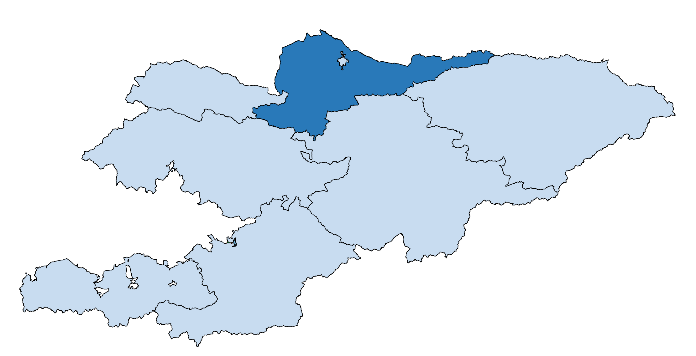

ЧУЙ
Чуйская область расположена в северной части республики.
Граничит на севере и западе с Республикой Казахстан,
на юго-западе – с Таласской и Джалал-Абадской областями,
на юге – с Нарынской областью, на юго-востоке – с Иссык-Кульской областью.
Центром Чуйской области является столица Кыргызстана – город Бишкек.
При подсчете статистических данных о численности населения области, н
аселение столицы республики учитывается отдельно. Крупные города – Токмок, Кант, Кара-Балта.
В состав Чуйской области входят 8 районов и 7 городов (один город областного значения –
Токмок и 6 городов районного значения – Кара-Балта, Шопоков, Кант, Кемин, Орловка, Каинды),
один поселок городского типа и 105 айылных аймаков.

Московский район – с. Беловодское (центр района)
Сокулукский район – с. Сокулук (центр района)
Аламудунский район – с. Лебединовка (центр района)
Чуйский район – г.Токмок (центр района)
Ыссык-Атинский район – г.Кант (центр района)
Кеминский район – г.Кемин (центр района)
Панфиловский район – г.Каинды (центр района)
Жайылский район – г.Кара-Балта (центр района)